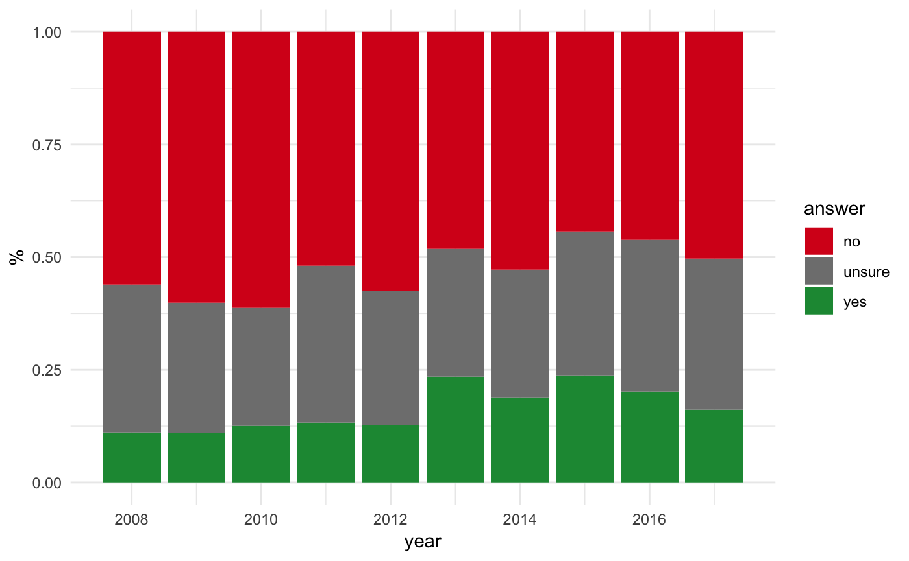
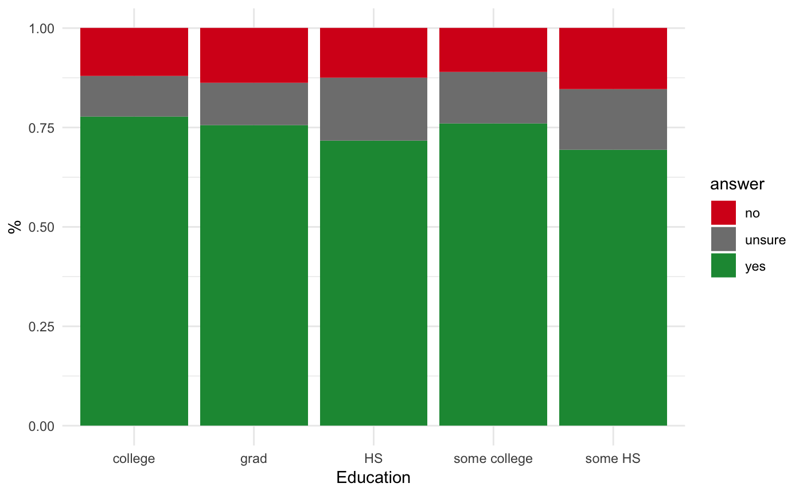
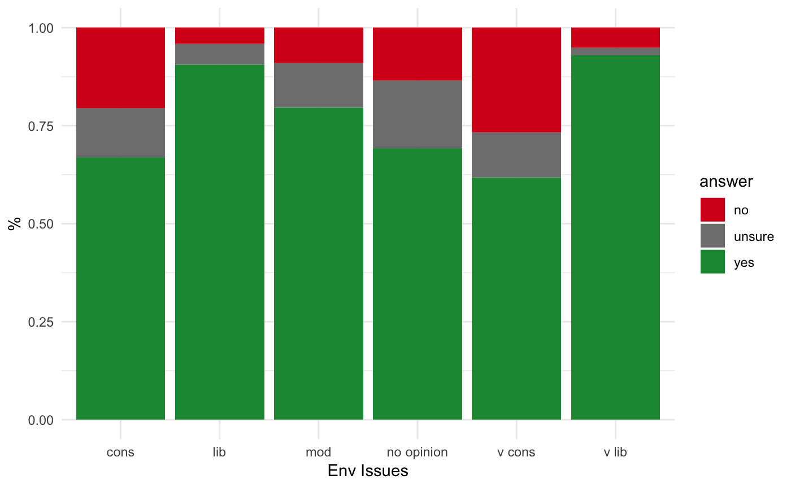

Data: Read
We’ll need to read the data and transform it from a wide table (with many columns) to a long one (with only a few columns) so that each row contains a unique value, ie an answer, and then we can easily query for any question or combination. With this data structure we can create and use generic plotting functions that accept any question or combination of questions to generate visualizations.
For the long data format from the polling data, we want a table with these columns:
| heading | question | answer | survey_id | value_num | value_chr |
|---|---|---|---|---|---|
| … |
To arrive at this more generic data structure for querying, you can use the function tidy_poll().
For more background on the how to read and manipulate data, you can check out the following cheatsheets found in RStudio’s Help menu or at Cheatsheets - RStudio:
# load libaries
library(calcoastpoll) # devtools::load_all() # devtools::install()
library(tidyverse) # see tidyverse.org for packages loaded
library(plotly) # use ggplotly() to make plot interactive
library(DT) # for rendering interactive datatable()
# paths and parameters of poll data
data_xlsx <- "CoastalOpinionPoll_thru2017.xlsx"
headers_xlsx <- "CoastalOpinionPoll_thru2017_headers.xlsx"
row_end <- 12891
cols_chr <- c(2,4:7,10:13,46,167,256,263,434,437,438,447,455,460,487)
dir_diagnostic_csvs <- "."
# tidy up data and save as csv for reading next time
if (file.exists("data.csv")){
d <- read_csv("data.csv", col_types = cols(value_num = col_double()))
} else {
d <- tidy_poll(data_xlsx, headers_xlsx, row_end, cols_chr, dir_diagnostic_csvs)
write_csv(d, "data.csv")
}Here are direct downloads to files:
- input data and headers:
- output data:
- output diagnostics:
Data: Questions
Now we can easily look at the questions and how many answers are associated and display with some interactivity using the DT::datatable() function.
Bar: CA ocean health better?, by year
Let’s use another custom function plot_bar_year() to look at how answers to a question vary over the years.
p <- plot_pctbar_qyn_year(d, "CA ocean health better?")
p
Bar: CA ocean health better?, by year, interactive
To make a graph interactive, we simply feed the plot object to the plotly::ggplotly() function.
ggplotly(p)Bar: Climate change problem?, by Education
plot_pctbar_qyn_qc(d, "Climate change problem?", "Education")
Bar: Climate change problem?, by Env Issues
plot_pctbar_qyn_qc(d, "Climate change problem?", "Env Issues")
Treemap: Recreational Activities, animated
library(gganimate)
q <- "Recreational Activities"
gif <- paste(q, "animated_treemap.gif")
# animate to gif
if (!file.exists(gif)){
animate_treemap_qc_year(d, q, gif)
}Now include the gif in the document with the following markdown: